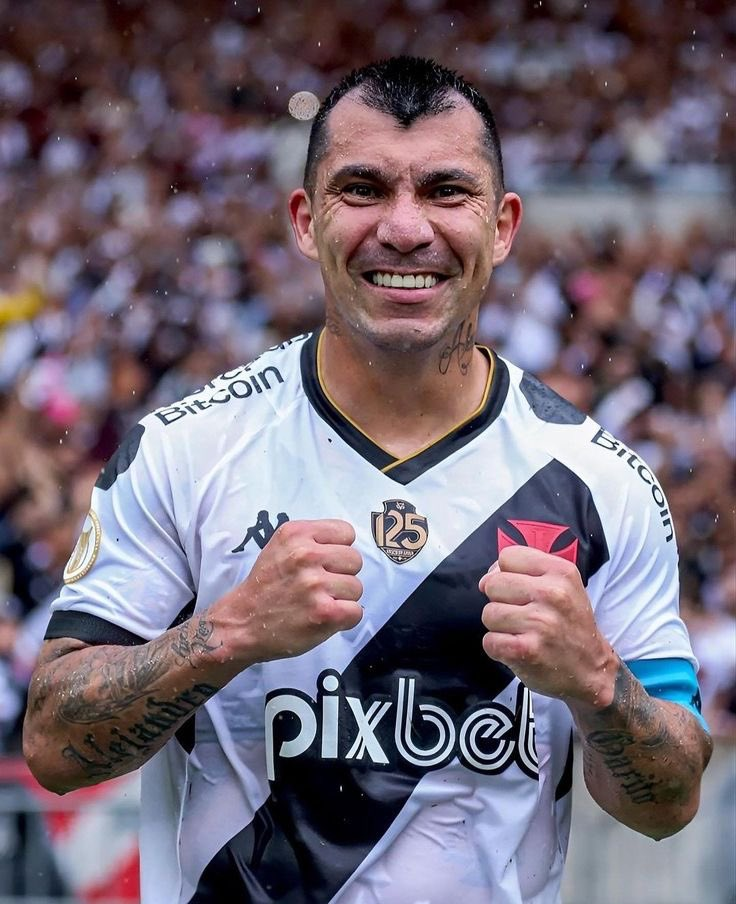

Gary Medel

Zagueiro
36 anos
Gary Medel, também conhecido como "Pitbull", é um experiente jogador de futebol chileno que atualmente integra o elenco do Club de Regatas Vasco da Gama. Nascido em 3 de agosto de 1987, em Santiago, Chile, Medel é reconhecido por sua intensidade em campo, versatilidade tática e liderança.
Sua carreira profissional começou no modesto clube chileno Universidad Católica, onde se destacou como um jogador promissor. Sua habilidade em diversas posições do meio-campo e da defesa logo chamou a atenção de clubes maiores, e em 2009, ele fez sua mudança para a Europa, ingressando no Sevilla, da Espanha.
No Sevilla, Medel consolidou sua reputação como um jogador aguerrido e versátil. Sua capacidade de interceptação, marcação firme e distribuição de bola eficaz o tornaram uma peça fundamental na equipe espanhola. Sua passagem de sucesso pelo Sevilla o levou a transferências para clubes de destaque na Europa, como o Cardiff City, da Inglaterra, e a Inter de Milão, da Itália.
Em 2017, Gary Medel retornou à Espanha para jogar pelo Besiktas, da Turquia, onde continuou a demonstrar sua qualidade e liderança em campo. Sua experiência internacional e habilidades técnicas o tornaram uma referência no futebol chileno, representando sua seleção em várias competições, incluindo Copas do Mundo e Copas América.
Em 2021, Medel fez sua chegada ao Vasco da Gama, trazendo consigo sua vasta experiência e determinação. Sua presença no meio-campo vascaíno trouxe estabilidade defensiva e liderança para a equipe. Além de suas habilidades técnicas, Medel é admirado por sua entrega incansável em campo e por sua capacidade de motivar seus companheiros.
Gary Medel é uma figura respeitada no mundo do futebol, conhecido por sua dedicação ao esporte e por sua contribuição tanto em clubes quanto na seleção chilena. Sua presença no Vasco da Gama representa não apenas uma adição de qualidade ao elenco, mas também um exemplo de profissionalismo e determinação para seus colegas de equipe.
 da Gama
da Gama